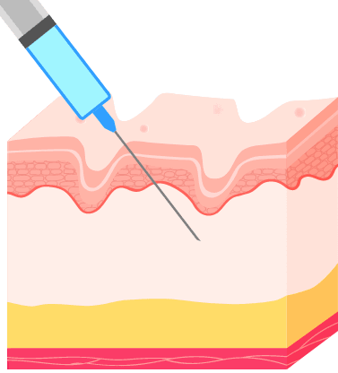
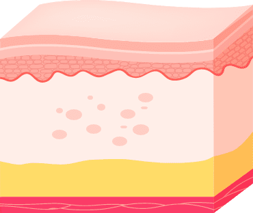
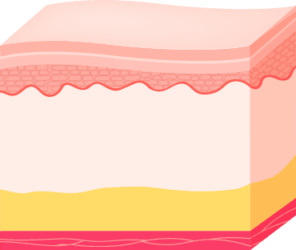

ULTRACOL/JUVELOOK
빛나는, 더 반짝일 수 있는
당신을 위한 울트라콜/쥬베룩을 소개합니다.
Scroll

빛나는, 더 반짝일 수 있는
당신을 위한 울트라콜/쥬베룩을 소개합니다.
Scroll

주름진 피부 내에 약물을 주입하면 그 즉시 주름과 볼륨이
채워지고
약물이 흡수&분해될 때 콜라겐을 활성화하여
모공 축소, 피부결 및
피부톤 개선, 자연스러운 리프팅 효과를
얻을 수 있습니다.
입자의 크기가 상대적으로 작은
울트라콜100과
쥬베룩으로 모공, 잔주름,
탄력 개선에 효과적입니다.
입자의 크기가 상대적으로 큰
울트라콜 200으로
볼 꺼짐, 팔자주름 등
개선에 효과적입니다.
대표원장의 섬세한 기술력과 숙련된
경험으로 큰 효과를 얻고
개인 맞춤형으로
진행되는 시술이기에 부작용이 적습니다.

15~20분

즉시 생활 가능

1개월 간격으로 3회 이상

크림 마취 또는 국소 마취
울트라콜/쥬베룩은 주름진 피부에 약물을 넣어
콜라겐을 재생 및
생성하는 시술입니다.
| 1 | 2 | 3 | 4 | 5 |
|---|---|---|---|---|

|

|

|
|

|
|
치료 전 주름 있는 부위 |
주사된 용량은 즉시 |
수분이 체내에 흡수되면서 |
분해됨과 동시에 |
개선된 피부 |

잔주름, 모공 등으로
고민이 많으신 분
얼굴의 자연스러운
볼륨 개선을 원하시는 분
오래가는 피부재생효과를
원하시는 분
시술은 아래와 같이 진행되며 상황에 따라 변경될 수 있습니다.

1:1 맞춤상담

크림 마취 또는 국소 마취

시술

관리방법 안내